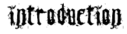

| |
| |
|
 |
 |
|
|
| |
|
|
| |
During the second half of the 12th century,
the number of cases of heresy in Europe grew to worrying
proportions. The Church consequently looked for effective ways of
wiping out this phenomenon.
In
France,
the
Inquisition
arose from the terms of the Treaty of Paris, which was signed
beneath the towers of Notre Dame on 12 April 1229. This agreement put an end
to the second Albigensian Crusade and certified, in the presence
of Saint Louis, King of France, the commitment of Raymond VII of Toulouse to
banish the Cathars from his earldom.
On 13 April
1233, Pope Gregory IX officially established an inquisitorial system
in France by announcing that he would be conferring unlimited
authority upon the Preaching Friars to combat heresy and appointing
F. Robert, known as le Bourge
(or the Bourgeois), as General Inquisitor for the Kingdom.
These events marked the end of the
principle expressed by Bernard de Clairvaux: Fides suadenda non imponenda (faith must
be persuaded, not imposed), and although heresy may not date from the
13th century, the implementation of a legal procedure was a completely new concept
in Europe.
|
|
| |
The Inquisition was set up
as a special tribunal whose jurisdiction was
limited to defending the faith. In addition to its investigative activities,
the Inquisition was invested with the dual
function of employing harsh measures and punishing. It did not, however,
act alone, as the civil authorities were in charge of
armed repressions and executing the sentences.
It was created as part
of the fight against the Cathars and Waldensians, and
its activities spread to all fields in breach of the
dogma or those encompassing witchcraft and philosophy. Even science was
affected if it was considered to be adopting a non-Aristotelian outlook
on the world. Galileo himself was obliged
to abandon his theory on heliocentrism before the Tribunal
of the Inquisition in 1633.
The
Inquisition took hold throughout France. In the north of
the Kingdom,
the
Inquisition appeared to act in a rather
unmethodical and disorderly way, whereas inquisitors in their
droves besieged the southern half, which was scene to
some of the most major cases of heresy at
the end of the Middle Ages. The Inquisition therefore had a
fixed base in the Languedoc region with travelling tribunals
comprising 5 or 6 inquisitors for the rest of the Kingdom.
|
|
|
| |

|
|
 |
(enlarge)
The Pope and the Inquisitor,
a painting by Jean-Paul Laurens, 1882, Bordeaux Musée des Beaux-Arts.
The
inquisitor,
Torquemada (1420 - 1498), with his index finger pointing
down at the table, can be seen dictating his projects to Pope
Sixte IV. This scene illustrates the secret advisory sessions held
with the Pope.
|
|
|
| |
|